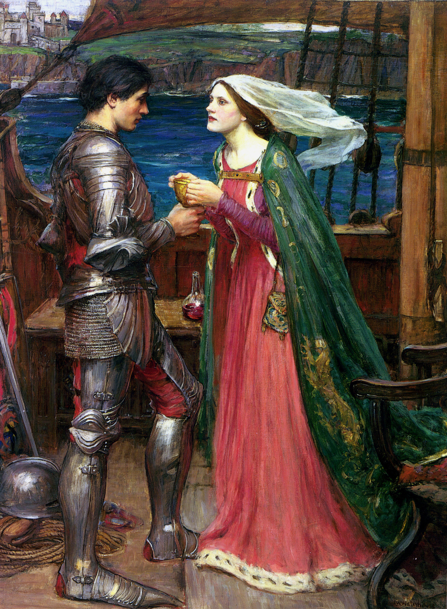

Romantic Traditions
The Crafting of the Round Table
The popularity of Geoffrey's Historia and its other derivative works (such as Wace's Roman de Brut) gave rise to a significant numbers of new Arthurian works in continental Europe during the 12th and 13th centuries, particularly in France. It was not, however, the only Arthurian influence on the developing "Matter of Britain". There is clear evidence that Arthur and Arthurian tales were familiar on the Continent before Geoffrey's work became widely known and "Celtic" names and stories not found in Geoffrey's Historia appear in the Arthurian romances. From the perspective of Arthur, perhaps the most significant effect of this great outpouring of new Arthurian story was on the role of the king himself: Much of this 12th-century and later Arthurian literature centres less on Arthur himself than on characters such as Lancelot and Guinevere, Percival, Galahad, Gawain, Ywain, and Tristan and Iseult. Whereas Arthur is very much at the centre of the pre-Galfridian material and Geoffrey's Historia itself, in the romances he is rapidly sidelined. His character also alters significantly. In both the earliest materials and Geoffrey he is a great and ferocious warrior, who laughs as he personally slaughters witches and giants and takes a leading role in all military campaigns, whereas in the continental romances he becomes the roi fainéant, the "do-nothing king", whose "inactivity and acquiescence constituted a central flaw in his otherwise ideal society". Arthur's role in these works is frequently that of a wise, dignified, even-tempered, somewhat bland, and occasionally feeble monarch. So, he simply turns pale and silent when he learns of Lancelot's affair with Guinevere in the Mort Artu, whilst in Yvain, the Knight of the Lion, he is unable to stay awake after a feast and has to retire for a nap. Nonetheless, as Norris J. Lacy has observed, whatever his faults and frailties may be in these Arthurian romances, "his prestige is never—or almost never—compromised by his personal weaknesses ... his authority and glory remain intact."
Arthur and his retinue appear in some of the Lais of Marie de France, but it was the work of another French poet, Chrétien de Troyes, that had the greatest influence with regard to the development of Arthur's character and legend. Chrétien wrote five Arthurian romances between c. 1170 and 1190. Erec and Enide and Cligès are tales of courtly love with Arthur's court as their backdrop, demonstrating the shift away from the heroic world of the Welsh and Galfridian Arthur, while Yvain, the Knight of the Lion, features Yvain and Gawain in a supernatural adventure, with Arthur very much on the sidelines and weakened. However, the most significant for the development of the Arthurian legend are Lancelot, the Knight of the Cart, which introduces Lancelot and his adulterous relationship with Arthur's queen Guinevere, extending and popularising the recurring theme of Arthur as a cuckold, and Perceval, the Story of the Grail, which introduces the Holy Grail and the Fisher King and which again sees Arthur having a much reduced role. Chrétien was thus "instrumental both in the elaboration of the Arthurian legend and in the establishment of the ideal form for the diffusion of that legend", and much of what came after him in terms of the portrayal of Arthur and his world built upon the foundations he had laid. Perceval, although unfinished, was particularly popular: four separate continuations of the poem appeared over the next half century, with the notion of the Grail and its quest being developed by other writers such as Robert de Boron, a fact that helped accelerate the decline of Arthur in continental romance. Similarly, Lancelot and his cuckolding of Arthur with Guinevere became one of the classic motifs of the Arthurian legend, although the Lancelot of the prose Lancelot (c. 1225) and later texts was a combination of Chrétien's character and that of Ulrich von Zatzikhoven's Lanzelet. Chrétien's work even appears to feed back into Welsh Arthurian literature, with the result that the romance Arthur began to replace the heroic, active Arthur in Welsh literary tradition. Particularly significant in this development were the three Welsh Arthurian romances, which are closely similar to those of Chrétien, albeit with some significant differences: Owain, or the Lady of the Fountain is related to Chrétien's Yvain; Geraint and Enid, to Erec and Enide; and Peredur son of Efrawg, to Perceval.
Up to c. 1210, continental Arthurian romance was expressed primarily through poetry; after this date the tales began to be told in prose. The most significant of these 13th-century prose romances was the Vulgate Cycle (also known as the Lancelot-Grail Cycle), a series of five Middle French prose works written in the first half of that century. These works were the Estoire del Saint Grail, the Estoire de Merlin, the Lancelot propre (or Prose Lancelot, which made up half the entire Vulgate Cycle on its own), the Queste del Saint Graal and the Mort Artu, which combine to form the first coherent version of the entire Arthurian legend. The cycle continued the trend towards reducing the role played by Arthur in his own legend, partly through the introduction of the character of Galahad and an expansion of the role of Merlin. It also made Mordred the result of an incestuous relationship between Arthur and his sister Morgause and established the role of Camelot, first mentioned in passing in Chrétien's Lancelot, as Arthur's primary court. This series of texts was quickly followed by the Post-Vulgate Cycle (c. 1230–40), of which the Suite du Merlin is a part, which greatly reduced the importance of Lancelot's affair with Guinevere but continued to sideline Arthur, and to focus more on the Grail quest. As such, Arthur became even more of a relatively minor character in these French prose romances; in the Vulgate itself he only figures significantly in the Estoire de Merlin and the Mort Artu. During this period, Arthur was made one of the Nine Worthies, a group of three pagan, three Jewish and three Christian exemplars of chivalry. The Worthies were first listed in Jacques de Longuyon's Voeux du Paon in 1312, and subsequently became a common subject in literature and art.
Le Morte d'Arthur
The development of the medieval Arthurian cycle and the character of the "Arthur of romance" culminated in Le Morte d'Arthur, Thomas Malory's retelling of the entire legend in a single work in English in the late 15th century. Malory based his book—originally titled The Whole Book of King Arthur and of His Noble Knights of the Round Table—on the various previous romance versions, in particular the Vulgate Cycle, and appears to have aimed at creating a comprehensive and authoritative collection of Arthurian stories. Perhaps as a result of this, and the fact that Le Morte D'Arthur was one of the earliest printed books in England, published by William Caxton in 1485, most later Arthurian works are derivative of Malory's.
Decline, Revival, and the Modern Legend
Post-medieval literature
The end of the Middle Ages brought with it a waning of interest in King Arthur. Although Malory's English version of the great French romances was popular, there were increasing attacks upon the truthfulness of the historical framework of the Arthurian romances – established since Geoffrey of Monmouth's time – and thus the legitimacy of the whole Matter of Britain. So, for example, the 16th-century humanist scholar Polydore Vergil famously rejected the claim that Arthur was the ruler of a post-Roman empire, found throughout the post-Galfridian medieval "chronicle tradition", to the horror of Welsh and English antiquarians. Social changes associated with the end of the medieval period and the Renaissance also conspired to rob the character of Arthur and his associated legend of some of their power to enthrall audiences, with the result that 1634 saw the last printing of Malory's Le Morte d'Arthur for nearly 200 years. King Arthur and the Arthurian legend were not entirely abandoned, but until the early 19th century the material was taken less seriously and was often used simply as a vehicle for allegories of 17th- and 18th-century politics. Thus Richard Blackmore's epics Prince Arthur (1695) and King Arthur (1697) feature Arthur as an allegory for the struggles of William III against James II. Similarly, the most popular Arthurian tale throughout this period seems to have been that of Tom Thumb, which was told first through chapbooks and later through the political plays of Henry Fielding; although the action is clearly set in Arthurian Britain, the treatment is humorous and Arthur appears as a primarily comedic version of his romance character. John Dryden's masque King Arthur is still performed, largely thanks to Henry Purcell's music, though seldom unabridged.
Tennyson and the Revival
In the early 19th century, medievalism, Romanticism, and the Gothic Revival reawakened interest in Arthur and the medieval romances. A new code of ethics for 19th-century gentlemen was shaped around the chivalric ideals embodied in the "Arthur of romance". This renewed interest first made itself felt in 1816, when Malory's Le Morte d'Arthur was reprinted for the first time since 1634. Initially, the medieval Arthurian legends were of particular interest to poets, inspiring, for example, William Wordsworth to write "The Egyptian Maid" (1835), an allegory of the Holy Grail. Pre-eminent among these was Alfred Tennyson, whose first Arthurian poem "The Lady of Shalott" was published in 1832. Arthur himself played a minor role in some of these works, following in the medieval romance tradition. Tennyson's Arthurian work reached its peak of popularity with Idylls of the King, however, which reworked the entire narrative of Arthur's life for the Victorian era. It was first published in 1859 and sold 10,000 copies within the first week. In the Idylls, Arthur became a symbol of ideal manhood who ultimately failed, through human weakness, to establish a perfect kingdom on earth. Tennyson's works prompted a large number of imitators, generated considerable public interest in the legends of Arthur and the character himself, and brought Malory's tales to a wider audience. Indeed, the first modernisation of Malory's great compilation of Arthur's tales was published in 1862, shortly after Idylls appeared, and there were six further editions and five competitors before the century ended.
This interest in the "Arthur of romance" and his associated stories continued through the 19th century and into the 20th, and influenced poets such as William Morris and Pre-Raphaelite artists including Edward Burne-Jones. Even the humorous tale of Tom Thumb, which had been the primary manifestation of Arthur's legend in the 18th century, was rewritten after the publication of Idylls. While Tom maintained his small stature and remained a figure of comic relief, his story now included more elements from the medieval Arthurian romances and Arthur is treated more seriously and historically in these new versions. The revived Arthurian romance also proved influential in the United States, with such books as Sidney Lanier's The Boy's King Arthur (1880) reaching wide audiences and providing inspiration for Mark Twain's satire A Connecticut Yankee in King Arthur's Court (1889). Although the 'Arthur of romance' was sometimes central to these new Arthurian works (as he was in Burne-Jones's "The Sleep of Arthur in Avalon", 1881–1898), on other occasions he reverted to his medieval status and is either marginalised or even missing entirely, with Wagner's Arthurian operas providing a notable instance of the latter. Furthermore, the revival of interest in Arthur and the Arthurian tales did not continue unabated. By the end of the 19th century, it was confined mainly to Pre-Raphaelite imitators, and it could not avoid being affected by World War I, which damaged the reputation of chivalry and thus interest in its medieval manifestations and Arthur as chivalric role model. The romance tradition did, however, remain sufficiently powerful to persuade Thomas Hardy, Laurence Binyon and John Masefield to compose Arthurian plays, and T. S. Eliot alludes to the Arthur myth (but not Arthur) in his poem "The Waste Land", which mentions the Fisher King.